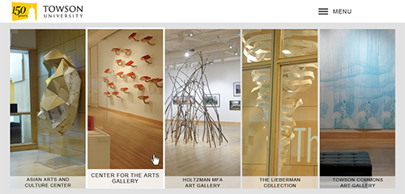
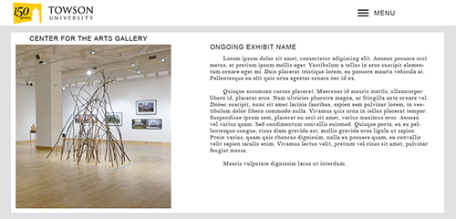
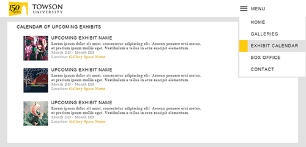
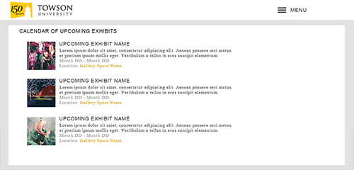
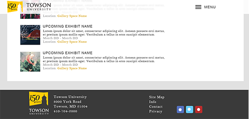
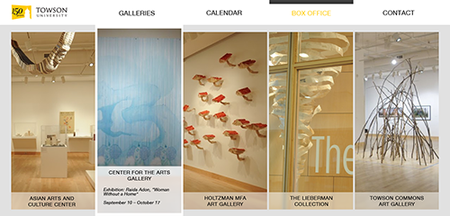
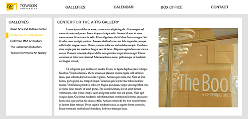
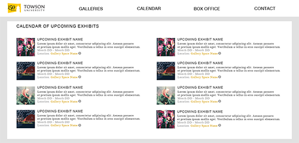
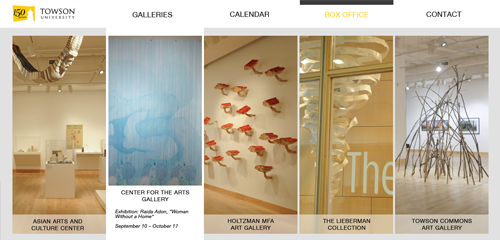
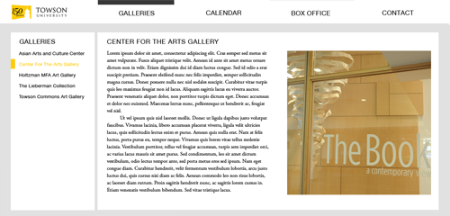

Project 1: Towson Art Gallery webpage redesign
This project asked us to re-invision Towson's Art Gallery website. I wanted to take this project in a clean and elegant direction, letting the gallery images really be the only elements on the site that had much color or contrast outside of TU's standard gold.
I originally decided that I wanted the pages to have light color schemes, so I chose a light grey for the background and wanted to use a white content box over top of that. The TU gold color would be used sparingly, for accent colors such as links.
Here's what the first design concepts looked like:

Homepage

Gallery pages

Menu design

Calendar page

Page footer
After getting the first round of feedback, I opted to get rid of the dropdown menu and instead line the menu list items across the top header bar. I also chose to include a sidebar navigation on the gallery pages (or any pages which are under categories which have more than one sub-page. So far it's only the gallery pages.) The calendar page was changed to display two columns of calendar entries, rather than just one. I also played with the gallery displays on the homepage, adding a bit more padding around the text and also including a bit more information about the gallery exhibition on mouseover.
New concepts are as follows:

Homepage

Gallery pages

Calendar page
The second round of feedback made me reconsider my hover state on the homepage for the gallery slices. I realized that having the steps created by the end of the grey space into the white border, then the edge of the image ending somewhere visible messed up my initial clean-and-sleek direction for the website. I changed the image so that it won't change height, and instead the white border extends up and down to fill 100% of the height of the column.
The dark grey/black hover bar on the menu might be tweaked to be slightly slimmer, and if it is, the new size will be the same size as the yellow left border on the sidebar navigation on the gallery pages in order to keep consistency. On the gallery sub-pages the gallery menu tab will also keep its black bar in order to reinforce the user's location within the website navigation.
The sidebar will be the same width as one of the vertical slices from the homepage. 100% width, divided by 5 vertical columns=20% width per column. Enforce a max-width at maybe 1000px. Column height is 90% of the browser height.
Stock images can be taken from Compfight, sorted under creative commons.

Homepage

Gallery pages